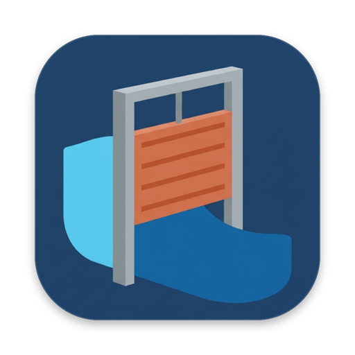
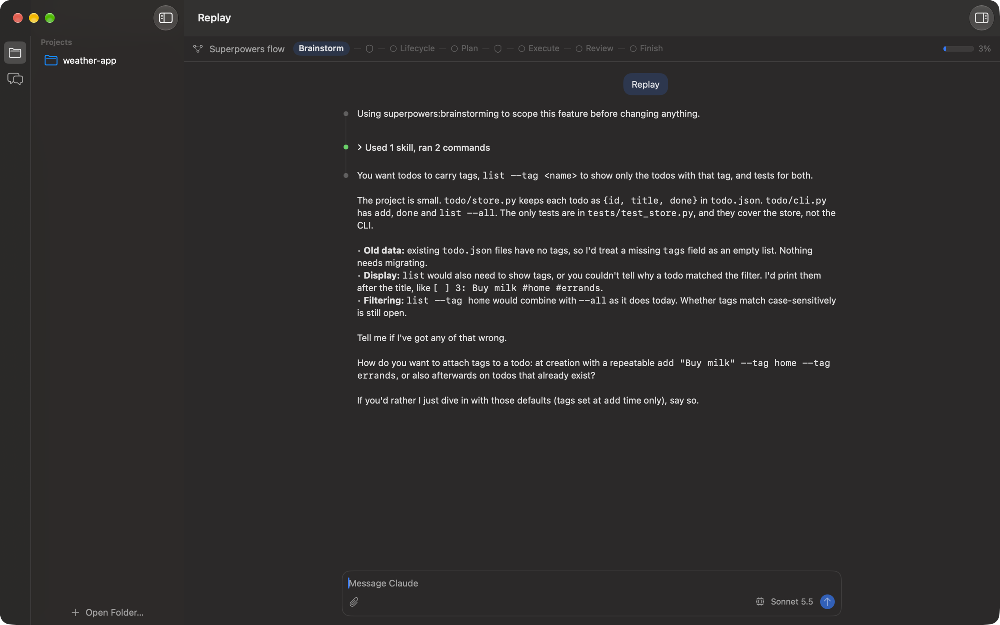
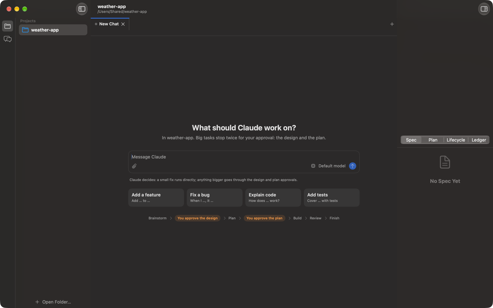
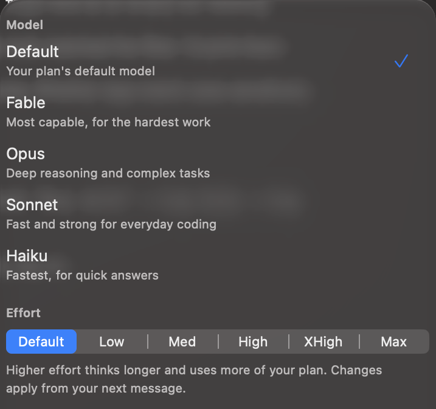

A Mac app for Claude Code.
Sluice runs the Claude Code you already have, with the Superpowers workflow built in. Small fixes happen straight away. Big work stops twice for you: once to approve the design, once to approve the plan.
Download for Mac
Claude decides which way each request goes. You see the stage it's in, and nothing gets built until you've said yes to the design and the plan.
Everything Claude Code does, in a real window
Your own Claude login
Sluice launches the claude you installed, signed in as you. No API key, and usage counts against your plan as it does in Terminal.
Spec, plan and progress, live
The inspector shows the spec, the plan, the lifecycle and the task ledger as Claude writes them, even in a git worktree.
Approvals in the window
Design, plan and permission requests appear as cards above the message box, so you answer them where you're already looking.
Model, effort and usage
Switch between Fable, Opus, Sonnet and Haiku, set the effort level, and see your plan's session and weekly limits, Fable included.
Tabs and history
Several chats per project in tabs, a searchable history, and chats Claude names for you in four words or fewer. Rename any of them.
Paste anything
Copy an image in WhatsApp or Preview, or files in Finder, and paste it into the message box. It's attached, ready for Claude to read.
Start with a sentence
Open a project folder and say what you want. Claude reads the code, picks the route, and for anything bigger than a quick fix, brainstorms with you before it writes a line.
Starters for features, bugs, explanations and tests get you going.


The right model for the job
Pick a model and an effort level from the message box. The next message uses them, and the chat carries on where it was.
The same popover shows how much of your plan you've used: this session, this week for all models, and this week for Fable.
Get started
- Install Claude Code and sign in.Sluice uses it to do the work. Follow the Claude Code setup guide, then run
claudeonce in Terminal to sign in. - Download Sluice and drag it to Applications.It's signed and notarized by Apple, and updates itself when a new version is out.
- Open a project folder.Drop a folder on the window or choose Open Folder, then tell Claude what to work on.